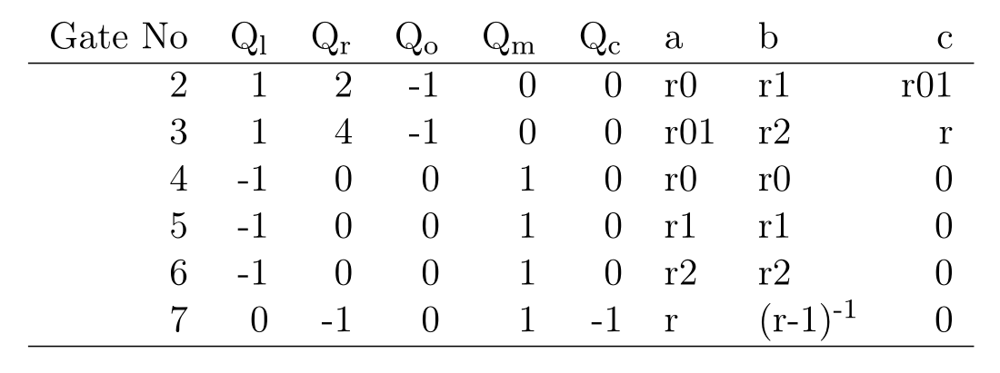

<!DOCTYPE html>
<html lang="en">

<head>
  <meta charset="utf-8" />
  <meta name="viewport" content="width=device-width, initial-scale=1.0, maximum-scale=1.0, user-scalable=no" />

  <title>Advanced ZK Proofs</title>
  <link rel="icon" href="./../../assets/favicon.svg" />
  <link rel="shortcut icon" href="./../../assets/favicon.png" />
  <link rel="stylesheet" href="./../../dist/reset.css" />
  <link rel="stylesheet" href="./../../dist/reveal.css" />
  <link rel="stylesheet" href="./../.././assets/styles/PBA-theme.css" id="theme" />
  <link rel="stylesheet" href="./../../css/highlight/shades-of-purple.css" />

  <link rel="stylesheet" href="./../.././assets/styles/custom-classes.css" />

</head>

<body class="site">
  <header class="site-header">
    <!-- This logo is a link only on the watching server, not the production build -->
    <a href="">
      
    </a>
  </header>
  <main class="reveal">
    <article class="slides">
      <section  data-markdown><script type="text/template">

# Cryptography Day IV

<pba-flex center>

- Quiz
- Advanced ZK Proofs<!-- .element: class="fragment" data-fragment-index="0" -->
- ZKP Activity<!-- .element: class="fragment" data-fragment-index="1" -->
- Cryptography in Context<!-- .element: class="fragment" data-fragment-index="2" -->

</pba-flex>
</script></section><section  data-markdown><script type="text/template">
# Advanced ZK Proofs
</script></section><section  data-markdown><script type="text/template">
# Outline

<pba-flex center>

1. [Under the hood of zk-SNARKs](#zk-practice) <!-- .element: class="fragment" data-fragment-index="4" -->
1. [Introduction to Plonk](#plonk) <!-- .element: class="fragment" data-fragment-index="4" -->
1. [Polynomial commitment](#polynomial-commitment) <!-- .element: class="fragment" data-fragment-index="4" -->
1. [Generating ZK-proofs using Circom and snarkjs](#circom-snarkjs) <!-- .element: class="fragment" data-fragment-index="6" -->

</pba-flex>
</script></section><section  data-markdown><script type="text/template">
## Circuit to SNARK Strategy

- To represent the circuit as a univariate polynomial called the "Trace Polynomial".<!-- .element: class="fragment" data-fragment-index="1" -->
- The trace polynomial is equal to zero at each "gate" of the circuit if the solution satisfies the gate relation.<!-- .element: class="fragment" data-fragment-index="2" -->
- Then the verifier should be able to test if the polynomial actually has a root for every gate.<!-- .element: class="fragment" data-fragment-index="3" -->
- ... without knowing the polynomial: This is done using "polynomial commitment".<!-- .element: class="fragment" data-fragment-index="4" -->
</script></section><section  data-markdown><script type="text/template">
## Universal PLONK Gate


- Supppose we have a left input $a$ and a right input $b$ and we are doing some addition and multiplication with them and the output is $c$.<!-- .element: class="fragment" data-fragment-index="1" -->
- Then we could encode all of these operations as:<!-- .element: class="fragment" data-fragment-index="2" -->
  $Q_l\times a + Q_r \times b + Q_o \times c + Q_m \times a\times b + Q_c = 0$<!-- .element: class="fragment" data-fragment-index="3" -->
- for some constant $Q_l$ $Q_r$ $Q_o$ $Q_m$ and $Q_c$<!-- .element: class="fragment" data-fragment-index="4" -->
- in fact all the operation we discussed can be written using one of these gates.<!-- .element: class="fragment" data-fragment-index="5" -->
</script></section><section  data-markdown><script type="text/template">
## Gate table for factorization

$r \times s = N$

$Q_l\times a + Q_r\times b + Q_o\times c + Q_m\times a\times b + Q_c = 0$

 
</script></section><section  data-markdown><script type="text/template">
## Gate table for left input to be small and not 1

$r_{01} = r_{0} + 2r_{1}$

$r = r_{01} + 4r_{2}$

$r_{i} \times (r_{i} - 1) = 0 \Rightarrow r_{i}^2 - r_{i} = 0$

$(r-1)\times\frac{1}{r - 1} = 1 \Rightarrow r\frac{1}{r - 1} - \frac{1}{r - 1} = 1$

$Q_l\times a + Q_r\times b + Q_o\times c + Q_m\times a\times b + Q_c = 0$


</script></section><section  data-markdown><script type="text/template">
## Gate table for the right input to be an integer and not 1

$Q_l\times a + Q_r\times b + Q_o\times c + Q_m\times a\times b + Q_c = 0$

</script></section><section  data-markdown><script type="text/template">
## Encode the trace as a polynomial T

- You can always encode a column of a table into a polynomial.<!-- .element: class="fragment" data-fragment-index="1" -->
- $Q_l(x)$ such that $Q_l(1) = 0, Q_l(2) = 1, Q_l(3) = 1, Q_l(4) = -1 ,...$<!-- .element: class="fragment" data-fragment-index="2" -->
  <!-- .element: class="fragment" data-fragment-index="2" --> sa
- When you have one polynomial for each column then you can turn the whole table into a polynomial:<!-- .element: class="fragment" data-fragment-index="3" -->
  $Q_l(x)\times a(x) + Q_r(x)\times b(x) + Q_o(x)\times  c(x) + Q_m(x)\times a(x)\times b(x) + Q_c(x)$<!-- .element: class="fragment" data-fragment-index="4" -->
  $= 0$<!-- .element: class="fragment" data-fragment-index="4" -->
</script></section><section  data-markdown><script type="text/template">
## Compute the trace polynomial from the gate table

SAGE demo
</script></section><section  data-markdown><script type="text/template">
## Prove that Validity of T

- T encode every gate is evaluated correctly: Zero test.
- The wiring is correct: Permutation test.
</script></section><section  data-markdown><script type="text/template">
# Zero test

- if f(x) = 0 for x = 1,..,13 then
- $f(x) = q(x) \times  (x-1)\times ...\times (x-13)$
- $f(x)/q(x) = (x-1)...(x-13)$
- How to verifier this.
</script></section><section  data-markdown><script type="text/template">
# Zero test on the resulting polynomial.

SAGE demo
</script></section><section  data-markdown><script type="text/template">
# Proving the correctness of the wiring

- So far we have proven that the we have a solution which satisfies each round of PLONK gate.<!-- .element: class="fragment" data-fragment-index="1" -->
- However we have not proven that we are using the outputs from previous rounds in correct places in each round.<!-- .element: class="fragment" data-fragment-index="2" -->
- So the prover could cheat and use the values.<!-- .element: class="fragment" data-fragment-index="3" -->
- The verifier need enforce equality of reused values in different rounds.<!-- .element: class="fragment" data-fragment-index="4" -->
- This is actually the hard creative bit in PLONK and that is what P stands for in PLONK.<!-- .element: class="fragment" data-fragment-index="5" -->
</script></section><section  data-markdown><script type="text/template">
# The wiring in a glance

- TODO: wired table
</script></section><section  data-markdown><script type="text/template">
# The Trace polynomial
</script></section><section  data-markdown><script type="text/template">
# The wiring permutation we want to prove

-- Define the permutation.
</script></section><section  data-markdown><script type="text/template">
# Naive Permutation check wtih zero test
</script></section><section  data-markdown><script type="text/template">
# Developing a wiring enforcement gadget/polynomial

- We take a step back and develop some tool to tackle this. <!-- .element: class="fragment" data-fragment-index="1" -->
- They sound random and irrelevant at first but it all make sense at the end. <!-- .element: class="fragment" data-fragment-index="2" -->
</script></section><section  data-markdown><script type="text/template">
# Product check

- We have a polynomial $f(x)$ and we want to prove that:<!-- .element: class="fragment" data-fragment-index="1" -->
- $\prod_{i in \{1..39\}}f(i) = 1$.<!-- .element: class="fragment" data-fragment-index="2" -->
- We could perform a a zero test $\prod_{i in \{1..39\}}f(i)$ but the degree is huge. <!-- .element: class="fragment" data-fragment-index="3" -->
- Instead we introduce a new polynomial: <!-- .element: class="fragment" data-fragment-index="4" -->
- $t(x) = $\prod_{i in \{1..x+1}}f(i)$ <!-- .element: class="fragment" data-fragment-index="5" -->.
- We have a nice recursion: $t(x + 1) = t(x)f(x+1)$ for $x \in \{1..39}$
</script></section><section  data-markdown><script type="text/template">
# Product check

- The observeration is that if you have the recursion:
  $t(x + 1) = t(x)f(x+1)$ for $x \in \{1..39}$ <!-- .element: class="fragment" data-fragment-index="1" -->
- And you know $ t(39) = 1 $ then you know that:
- $\prod\_{i in \{1..39}}f(i).
- We intepolate $t$ and it will have order 38 (vs 38 \* 13)$ <!-- .element: class="fragment" data-fragment-index="2" -->
- We run a zero test on $t(x + 1) - t(x)f(x+1) = 0$ for $\{1,...,39\}$ <!-- .element: class="fragment" data-fragment-index="3" -->
</script></section><section  data-markdown><script type="text/template">
# Ratio check

- We can run the product check to prove $\prod_{i in \{1..39\}}f(i)/g(i) = 1$.<!-- .element: class="fragment" data-fragment-index="2" -->
- $t(x + 1) = t(x)f(x+1)/g(x + 1)$ <!-- .element: class="fragment" data-fragment-index="2" -->
- We can only run a zero test polynomials. <!-- .element: class="fragment" data-fragment-index="3" -->
- Run zero test on $t(x + 1)g(x + 1) - t(x)f(x+1)$.
</script></section><section  data-markdown><script type="text/template">
# Permutation check

- Now we want to use the ratio check to enforce the wiring we have.
- note that let $\psi$ be a permutation which preserve $T$ i.e. we have $T(a) = T(\psi(a))$ then
- ${(a, T(a))| for all a in \{1,..,39}} == {(\psi(a), T(a))| for all a \in \{1,...,39\}\}$
- Then for any random $u_1, u_2$
  $\prod\_{a\in\{1,..,39\}}\frac{u*1 - u_2 * a - T(a)}{u*1 - u_2 * \psi(a) - T(\psi(a))} = 1.
</script></section><section  data-markdown><script type="text/template">
# Proof of wiring being correct

- The verifier runs a zero test on $T(x) - N$.
- The verifier runs a zero test on $T(3x) - a(x)$, $T(3x+1) - b(x), $T(3x+2) - c(x)$
- A Permutation check on $T(x)$ and $T(\psi(x))$ Which is a zero test on
- $t(x + 1)(u_1 - u_2* (x+1) - T(x + 1)) - t(x)(u_1 - u_2 * (psi(x)+1) - T(psi(x)+1) = 0$
</script></section><section  data-markdown><script type="text/template">
# Proof of correctness of the wiring on the trace polynomial.

SAGE demo
</script></section><section  data-markdown><script type="text/template">
# Zero test without knowing the polynomial: Polynomial commitment

- When the prover tells the $f(x)$ at some point $u$ ($f(u)$) without revealing $f(x)$.<!-- .element: class="fragment" data-fragment-index="1" -->
- It is a tool to convince the verifier which it has done so honestly.<!-- .element: class="fragment" data-fragment-index="2" -->
- The prover first commit to the polynomial $f(x)$ so later on, they can't back off and cheat (and use another polynomial).<!-- .element: class="fragment" data-fragment-index="3" -->
- Then the verifier is going to ask the prover to evaluate the polynomials in random point $u$.<!-- .element: class="fragment" data-fragment-index="4" -->
- The verifier is able to be confident that $f(u) = v$.<!-- .element: class="fragment" data-fragment-index="5" -->
</script></section><section  data-markdown><script type="text/template">
# Zero test using polynomial commitment

- The prover claims it has $f(x)$ passing the zero test.<!-- .element: class="fragment" data-fragment-index="1" -->
- The prover is also able to compute $q(x)$ such that <!-- .element: class="fragment" data-fragment-index="2" -->
- $f(x) = q(x) \times  \prod(x-1)..(x-13)$<!-- .element: class="fragment" data-fragment-index="2" -->
- The prover commit to $f$ and $q$.<!-- .element: class="fragment" data-fragment-index="3" -->
- The verifier ask the prover to provide them with $f(u)$ and $q(u)$ for some random point $u$<!-- .element: class="fragment" data-fragment-index="4" -->
- It is very unlikely that the prover is able to lie about $f(u)$ and $q(u)$ given he has commited to $f$ and $q$.
- The verifier computes $\prod(u-1)...(u-13)$<!-- .element: class="fragment" data-fragment-index="5" -->
- The verifier verifies that $f(u) = q(u)\times \prod(u-1)...(u-13)$ and if so believes that the prover has a solution.<!-- .element: class="fragment" data-fragment-index="6" -->
</script></section><section  data-markdown><script type="text/template">
# KZG Polynomial-commitment

- Is the most space efficient polynomial commitment.<!-- .element: class="fragment" data-fragment-index="1" -->
- Uses elliptic curve cryptography.<!-- .element: class="fragment" data-fragment-index="2" -->
- It requires trusted setup: a pre-computation with toxic waste which needs to be discarded to keep the scheme secure.<!-- .element: class="fragment" data-fragment-index="2" -->
</script></section><section  data-markdown><script type="text/template">
## Making ZK non-interactive

- The only interactive step is when verifier is quizzing prover with a random value $r$.<!-- .element: class="fragment" data-fragment-index="1" -->
- We replace that with asking the prover to apply a secure hash function to his commitment to generate $r$.<!-- .element: class="fragment" data-fragment-index="2" -->
- That way if the prover changes his commitment his point also changes without his control. <!-- .element: class="fragment" data-fragment-index="3" -->
</script></section><section  data-markdown><script type="text/template">
## Use Circom to generate trace polynomials.

Circom demo
</script></section><section  data-markdown><script type="text/template">
## Use snarkjs to generate proofs

Generate proof demo with snarkjs
</script></section><section  data-markdown><script type="text/template">
## Use snarkjs to verify the proofs

Verify the proof snarkjs
</script></section><section  data-markdown><script type="text/template"></script></section>
    </article>
  </main>

  <script src="./../../dist/reveal.js"></script>

  <script src="./../../plugin/markdown/markdown.js"></script>
  <script src="./../../plugin/highlight/highlight.js"></script>
  <script src="./../../plugin/zoom/zoom.js"></script>
  <script src="./../../plugin/notes/notes.js"></script>
  <script src="./../../plugin/math/math.js"></script>

  <script src="./../../assets/plugin/mermaid.js"></script>
  <script src="./../../assets/plugin/mermaid-theme.js"></script>

  <script src="./../../assets/plugin/chart/chart.js"></script>
  <script src="./../../assets/plugin/chart/chart.min.js"></script>

  <script src="./../../assets/plugin/tailwindcss.min.js"></script>

  <script>
    function extend() {
      var target = {};
      for (var i = 0; i < arguments.length; i++) {
        var source = arguments[i];
        for (var key in source) {
          if (source.hasOwnProperty(key)) {
            target[key] = source[key];
          }
        }
      }
      return target;
    }

    // default options to init reveal.js
    var defaultOptions = {
      controls: true,
      progress: true,
      history: true,
      center: true,
      transition: 'default', // none/fade/slide/convex/concave/zoom
      slideNumber: true,
      mermaid: {
        startOnLoad: false,
        logLevel: 3,
        theme: 'base',
        themeVariables: {
          primaryColor: purple,
          primaryTextColor: white,
          primaryBorderColor: pink,
          lineColor: pink,
          secondaryColor: lightPurple,
          tertiaryColor: lightPurple,
        },
      },
      chart: {
        defaults: {
          color: 'lightgray', // color of labels
          scale: {
            beginAtZero: true,
            ticks: { stepSize: 1 },
            grid: { color: "lightgray" }, // color of grid lines
          },
        },
        line: { borderColor: ["#ccc", "#E6007A", "#6D3AEE"], "borderDash": [[5, 10], [0, 0]] },
        bar: { backgroundColor: ["#ccc", "#E6007A", "#6D3AEE"] },
      },
      plugins: [
        RevealMarkdown,
        RevealHighlight,
        RevealZoom,
        RevealNotes,
        RevealMath,
        RevealMermaid,
        RevealChart
      ]
    };

    // options from URL query string
    var queryOptions = Reveal().getQueryHash() || {};

    var options = extend(defaultOptions, {"width":1400,"height":900,"margin":0,"minScale":0.2,"maxScale":2,"transition":"none","controls":true,"progress":true,"center":true,"slideNumber":true,"backgroundTransition":"fade"}, queryOptions);
  </script>


  <script>
    Reveal.initialize(options);
  </script>
</body>

</html>
